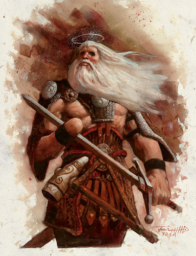

资料来源：费伦大陆信仰与神系介绍 Faiths & Pantheons
Tyr泰尔
公平者The Even-Handed,残神the Maimed God,戒律之神the Fast God

强大神力
标记：在战锤上放置的平衡的天平

所处位面:圣山
居住领域:三神殿House of the Triad
阵营：守序善良
神职：公正Justice
敬拜者：圣武士,法官，官员，律师，警员，君主the oppressed
牧师阵营：CG，LN，NG
领域：善良，知识，法律，复仇，战争
爱用武器：“正义审判者(Justicar)”（长剑）
无论在那个文明的土地上，善良的官员们都会在对犯罪进行审判时低声向泰尔--公平者The Even-Handed--祈祷，祈祷他引导他们做出公正而坚决的判决。他在很久以前作为一个怀着乌托邦式的理想的外来神从其他世界来到了托瑞尔，泰尔视他自己为在费伦的人类中创造一个完美社会的缔造者，并将人类视为他任性的孩子。但当他意识到他赋予自己的对凡人的责任几乎无法被实现而且必须保护一个几乎不会产生改变的世界时，这种痛苦使得泰尔的人生观中总潜藏着一丝悲哀。
在修士们的绘画中，泰尔常被描绘成一个老年独臂战士，常常还有一条带血的绷带包裹着他受伤的眼睛。他之所以被称为残神是因为他的右手在与一个被称为“混乱之犬”Chaos Hound恪泽夫Kezef的存在的战斗中失去了。他失去他的眼睛是在动乱之年Time of Troubles,由奥亲自挖去的，目的是惩罚他没有发现有人偷走命运石板以及暴露出托瑞尔的诸神间的不合。信徒们认为泰尔的这些伤中的寓意是对正义的坚定追求，在需求正确方向时为真相的付出的代价和维护正义的严厉性。特别激进的泰尔教派甚至在他们的信徒中鼓励自残，但他们被大多数信徒视为错误和有罪的，不过这些教徒通常也会在眼睛上蒙上纱布并在右手上带上不同色的护腕以示对他们的盲眼之神的尊崇。
平民视泰尔和他的牧师为正义的严厉仲裁者，常常忽略父亲般关心凡人的泰尔教条而更多的注意他关于黑白分明的自然道德的教义。他们视泰尔为神的坚定的象征- -他们知道泰尔希望他的信徒能做到公正，好的审判，对无罪的人友好，因此给予泰尔的牧师以最大的信任。
泰尔的牧师在清晨祈祷神术。同时在许多次要的假日里，泰尔的神父按照严格的仪式进行一种每月一次的重要宗教仪式。每个月的第一天，泰尔教Tyrrans称为“正义之视”的庆典，也是祈祷者唱诗班出现的时候，他们都拿着白热的闪耀着光和热量的战锤。第十三天是“残疾之庆典”，唱诗班会咏唱嘹亮而激昂的圣歌，同时在他们周围会出现被仿佛是燃烧的血的灵气包围的交叉的手的幻象。最后一个简单的宗教仪式称作“盲眼之式”，是在每月的第二十二天，他的仪式包含一幅燃烧着的哭泣双眼的图画。泰尔的牧师通常还兼职圣武士。
历史/关系
泰尔是于-247DR年的一件被称为“正义之初现”的事件中来到托瑞尔的。他是自靠近今日的图尔米西Turmish附近阿拉贡Alaghon的一个时空门的爆发中出现的，他统率着两百名执政官archon穿越了威尔贡海岸Valhon Beach来平复古代吉哈姆达斯Jhaamdathan神系的残余，这个神系已陷入无秩序状态并令市区他们保护的古帝国被他们的精灵敌人所毁灭。在接下来的战斗中，泰尔杀死了瓦里甘Valigan，一个在-269DR获得神格的较弱神力的混乱政治之神，他帮助残忍的瑟拉珊德四世Thelasand IV大主教获得了权势，后者使得古帝国陷入了与精灵的冲突中。
泰尔在“大进军”(Procession持续到了-238年)的行动和牺牲吸引了伊尔玛特Ilmater的注意,他于-243年加入了泰尔的军队。多年后，因为泰尔的大部分仆从都被放逐或被杀，而这个神本身在付出如此大代价仍未达到他的伟大目标后对托瑞尔产生了兴趣，大进军结束了。之后过了数年，托姆 Torm成为了正义之神的战争领袖。他们再加上伊尔玛特，被后世称作三神Triad。
在降临超过1600年之后，泰尔已经把他的统治扩张到了整个费伦--几乎没有人不知道他的名字和他热心的表现。他就是文明的声音，他促进法律和道德的建设并管理任何土地上的所有智慧生物间的公平正义。在这点上，他既是改革者又是保守者，表现为推动当前在世界上仍然腐败和无法律的文明和已建立了有序的法律体系的文明的力量。
泰尔在泰瑞尔的短暂时间里结下了众多的敌人。他有启发对那些献身给暴虐，邪恶，或无法无天，并对班恩Bane,希瑞克Cyric,马斯克Mask,塔罗纳Talona,以及塔洛斯Talos有着特别的敌意。
教条
展现真实，惩罚犯罪，改正错误，永远在你的行动中保持真实和公正。支持法律，无论你到了哪里都要遵守法律，并且无论在哪儿都要指出那些违法的人。保留你自己的计划，行为和决定的纪录，这样将来你的错误就可以获得改正，你对各片土地上法律的领悟会加深，你识别破坏法律者的能力也会提高。注意你的观察资料和猜测可以让你在企图进行非正义行为的人进行违反秩序和法律的行动前察觉到他们的意图。为无法亲自向犯罪者讨回公道的人复仇。
牧师与寺庙：
泰尔教会的教条要求信徒将秩序带到无秩序地区，惩罚对邪恶视而不见者，并通过谨慎而公平的正义系统保护文明的繁荣昌盛。他们的教条是一种通过仁慈的力量和武装起来的警惕表现的正义学说，是一种可以吸引圣武士和守序战士的哲学体系。绝大多数信徒们并不上战场战斗，不过，他们视在法庭上作为官员，法官，法警和商人是一场更为重要的战斗。泰尔教徒将所有私事视为纯粹的道德堕落，认为世界的法则就是为所有人谋取最大利益。他们有时表现得很狭隘，有时甚至是暴力的，并且极少能容忍嘲讽，取笑，或质疑他们的信仰。
泰尔的牧师将法律带到无法律之地，通常是作为法官，陪审员，或刽子手。在没有法律条文可指导他们的判决时，他们会遵守类似“以眼还眼，以牙还牙”一类的规则。不过泰尔教徒更喜欢偏向仁慈的处置，常对无意间犯下罪行的罪犯采用减刑或只对案件进行粗略的宣判。这些罪犯的名字通常会纪录在牧师的“立法之书”(Book of Lawgiving)上，这些书会存放在最近的寺庙中供查阅以防止犯人再次犯罪并轻易逃脱。强有力的牧师常常在向罪犯宣判时使用正义面具mark of justice神术以增强自己的威严感。
在文明的领地内，泰尔教徒（不可避免地被那些恶意批评者中伤为“暴君tyrants”）常成为法律专家，有才干的律师，法官，或有力的商人，常在地方官员面前讨论复杂的法律条文和案例。他们视后者为慈善团体，因为他（有时甚至非常慷慨的）赠与教会“发言费”。
在某些情况下，泰尔教徒会为被犯下罪行而无法向犯罪者讨回公道的人代理复仇的任务。在这些情况下，因为法律已被破坏得如此严重以至于变得毫无意义，泰尔的牧师会直接向邪恶或腐败势力挑战，如果必要的话甚至直接杀死他们。
泰尔的教会联系紧密并高度组织化，他们在整个费伦建立了一个广阔而强大的神殿系统。他们建立了一套严格的法律体系，被称为“无穷法令Innumerable Edicts”,而且它正一年一年的变得越发文本化和法律化。
在当前，泰斯尔Tethyr（沙漠帝国Empires of Sands中的一个国家）的坚定的信仰系统的发展吸引了教会的主要注意力，当那片土地陷入各文明之间的战争时有许多信徒聚集在了那里，并留在那里维护地区稳定。在塞斯克Thesk的泰尔神殿House of Tyr's Iland风格凝重，它显示了教会沉静和传统的一面，他同时也是正义骑士团--在与他们野心勃勃的邻居塞Thay的永无止境的战斗中荣耀他们的残神的牧师，战士和圣武士--的庇护所。单个的泰尔神庙通常提供住宿，换马，医疗，法术援助，武器，装备，以及神圣建言，甚至包括忏悔过错，这在教条中占据了一个重要的位置。
Tyr 泰尔
20级圣武士/20级牧师Cleric
中等体形外位面生物（善良，守序）
神格等级：18
生命骰：20d8+140(外位面生物)+20d10+140(圣武士)+20d8+140(牧师) 生命值 940点
优先攻击权：+11(+7 敏捷dex，+4改善先攻improved init)
速度：60
防护等级：76 （+7敏捷dex，+18神力divine，+31自然nature，+10偏转deflection）
攻击：“正义审判者(Justicar)”+5瞬杀长剑+76/+71/+66/+61近战或法术+70近战/+65远程接触。总是得到20的攻击检定。重击瞬杀。
伤害：“正义审判者(Justicar)”+5瞬杀长剑 1d8+23/17-20致命一击；或者通过法术。总是造成最大伤害（长剑31点）
面宽/可触距离 ：5 及5/5
特殊攻击：领域力量，超凡神圣能力（salient divine abilities），重击邪恶（smite evil）（每天三次，每次武器攻击+10攻击检定，+60伤害），类法术能力，超度不死生物/每天13次（施法等级38）。
特性：勇气笼罩（凡人在所有对抗恐惧的检定上+8奖励，范围10ft内所有友方），侦测邪恶，神圣笼罩（18哩，DC38），神力优雅divine grace,神力医疗，神圣免疫，DR53/+4，火系抗力38，神祗国度（100哩外界，1800罩魑幻妫，lay in hands(200hp)，随意位面传送 （plane shift at will）,远程沟通18哩，医疗疾病每十天6次，自发性施展神力法术，SR50，随意无误传送，领悟，交谈，阅读所有语言并直接与18哩内的任何存在交谈。
豁免值：坚韧+57，反射+57，意志+65，在豁免时总是得到20
能力：力量34，敏捷24，体质25，智力35，感知40，魅力30
技能：集中+88，外交+97，收集情报+71，训练动物+71，医疗+96，胁迫+57，判断方向+44，跳跃+40，知识（奥术）+53，知识（历史） +53，知识（地区）+36，知识（贵族制和王权制）+53，知识（位面）+53，知识（宗教）+93，聆听+66，专业（审判）+124，骑乘（马匹） +72，占卜+73，搜索+51，察觉动机+91，法术知能+93，侦察+58，使用绳索+32，野外求生+50。在判定时总是获得20。
特技：盲斗，顺劈砍，战斗施法，战斗反射，制造玄奇物品，闪避，法术强效，法术增程，增强顺劈砍，重击改善（长剑），改善先攻，法术持久，强力攻击，法术瞬发，无声法术，法术穿透，静止法术Still Spell,切割，追踪，双重法术（twin spell），武器专注（长剑）。
神圣免疫：属性伤害，属性吸取，酸，寒冷，即死效果，疾病，粉碎术，电，能量吸取，心智影响效果，瘫痪，毒，睡眠，震慑，改变形态，监禁术，放逐术。
超凡神圣能力：改变现实（复制法术豁免DC48，暂时非魔法物体持续18天，暂时魔法物体或生物持续18个小时），化身（最多20个），感应战争，召唤生物（最多同时召唤18个守序神界生物，每个最多拥有18HD），清洗视觉18ft，创造大型物体（最多重1800lb或最多360立方眨，创造物体（最多重900lb或最多180立方眨，神力之刃（每天13次，射程18里，28d12伤害），神力鼓舞（希望，每天最多18个生物），神力圣武士，神力召还（守序），神圣护盾（阻止180点伤害，每天10次），神力技能专注（专业[审判]），神力施法，神力武器专注（长剑），神力武器专精（长剑），额外领域（复仇），额外领域（战争），不可抗打击（长剑，坚忍豁免DC35），了解秘密（意志豁免DC38），布置任务（每天最多18个生物），控制凡人（意志豁免DC38，最多20个凡人），真实力量（每天最多18个生物，意志豁免DC38）。
领域力量：在+1等级上施放善良系法术，在+1等级上施放预言系法术，在+1等级上施放秩序系法术。
类法术能力：泰尔使用下列能力，相当于28级施法者，除了善良法术，预言法术和秩序法术，这时他作为29级施法者。豁免DC为38+法术等级。援助术， Bigby的逆转之拳,Bifby的裂解之手，Bifby的紧握之手，剑刃障壁，公牛力量，平复情绪，千里眼/顺风耳，侦测密门，侦测想法，格言，洞察方位，解除混乱，驱除邪恶，预言，神力，耐受元素，寻找路径，火焰击，远见，怪物定身术，神圣荣光，神圣重击（Holy Smite）,圣言术，传奇学识，防护混乱光环，防护邪恶光环，魔法之袍，魔法武器，秩序之怒，律令：失明，律令：死亡，律令：震慑，防护混乱，防护邪恶，正义之力，律法之盾，法术免疫，精神武器，石肤术，九级怪兽召唤术（只能作为善良或秩序法术），真实之视。
神术每日（0至15级）6/10/10/10/9/9/8/8/7/7/3/3/2/2/2/2 基本DC=27+神术等级。
神术每日（0至15级）7/7/7/6/4/4/4/3/3/3/3/2/2/2/2 基本DC=27+神术等级。
携带物品：泰尔携带“正义审判者(Justicar)”+5长剑，它拥有瞬杀斩首的特殊能力。
施放级别：25级；重量：6lb。
其他神圣能力
作为一个强大神力，泰尔在任何掷骰中（包括攻击骰，伤害骰，豁免）自动获得最好的结果。他是不死之身。
感知：泰尔可以看见，听见，触摸和嗅到18哩的距离。作为一个标准动作，他能够感知到任何18哩内的信徒，圣迹，与他有关的物体和任何他的名字在一个小时内被说出的地点。他能够立即将他的感知延伸到20个地方。他立即能够在2个地方阻止神格等级等于或者小于他的神的感知力量，时间最长可达18个小时。
神力感知：泰尔可以在非正义的事件发生之前或之后10到18天内知道这件事。
自动动作：泰尔能够作为一个自由动作使用知识（奥术），知识（历史），知识（地区），知识（贵族制和王权制），知识（位面），知识（宗教），或专业（审判），只要该项任务的DC在30或者30以下。他每轮能够完成20个类似的自由动作。
创造魔法物品：泰尔能够创造任何魔法武器和魔法盔甲以及任何可以给予识破幻象或谎言的魔法物品。
化身（Avatar）
泰尔的化身通常出现为一个无所畏惧、穿着锁子甲的留须人类男性。他没有右手，有时会在眼睛上蒙上一块有着标记的纱布。泰尔的化身通常会装备长剑或战锤，在前额上方有着明亮耀眼的光环，表明他们是被神派遣来的。虽然即使被覆盖着仍然可以视物，他的眼睛在第一次出现是会明亮的闪耀着，但在随后会慢慢减弱直至成为黑色的空洞。
泰尔在很久以前就对拜访教会感到厌倦了。当过去他转变为他的人类形态时，通常是主持一个看来无关紧要的审判，但这位残神知道在人类的意志中有许多并不是仅有正义就够的。
泰尔的化身：与本体相同，除了以下之外:
神格等级9，防护等级58（触摸36，措手不及58），攻击+67/+62/+57/+52近战（ 1d8+23/17-20，+5瞬杀长剑）或者法术+61 近身触摸或者+56远程触摸。
SQ:神圣笼罩（900眨DC29）,DR 44/+4，火系防护29，SR41
豁免: 坚韧+48，反射+48，意志+56；专业（审判）+87，所有技能减低9点。
超凡神圣能力：感应战争，清洗视觉9ft，神力之刃（每天13次，射程9里，19d12伤害），神力召还（守序），神圣护盾（阻止180点伤害，每天10 次），神力武器专注（长剑），神力武器专精（长剑），额外领域（复仇），额外领域（战争），不可抗打击（长剑，坚忍豁免DC26），真实力量（每天最多9 个生物，意志豁免DC29）。
类法术能力：施法等级为19级，善良法术，预言法术和秩序法术施法等级为20级，豁免掷骰为DC29+法术等级。
法术：同本体，但化身的牧师神术豁免DC为25+法术等级。